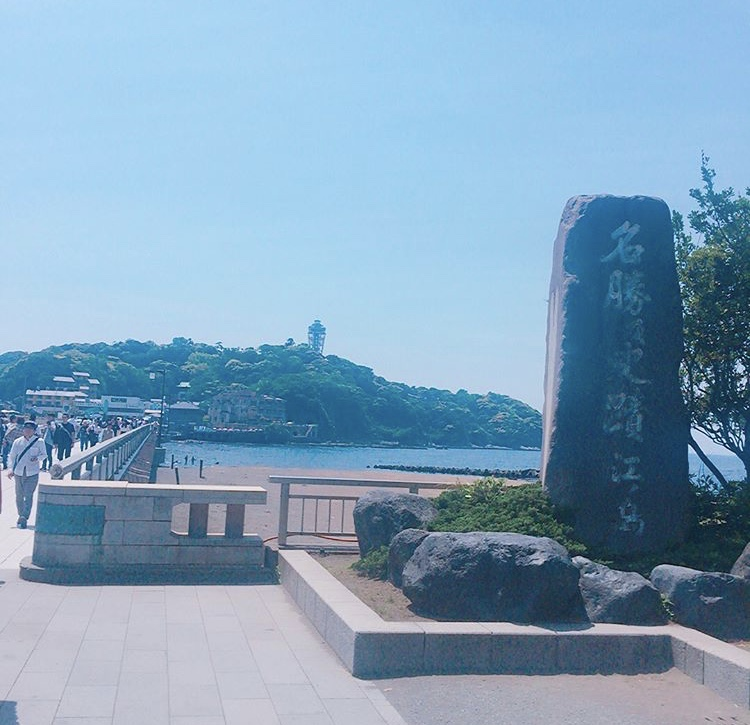
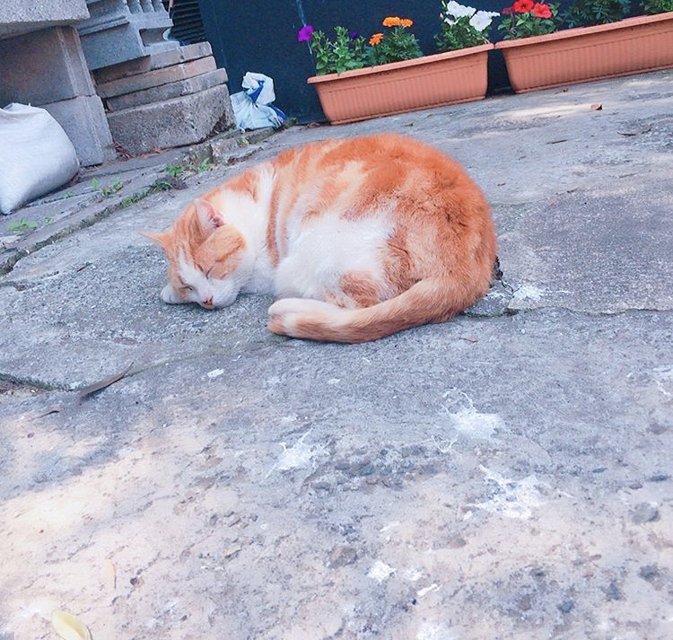
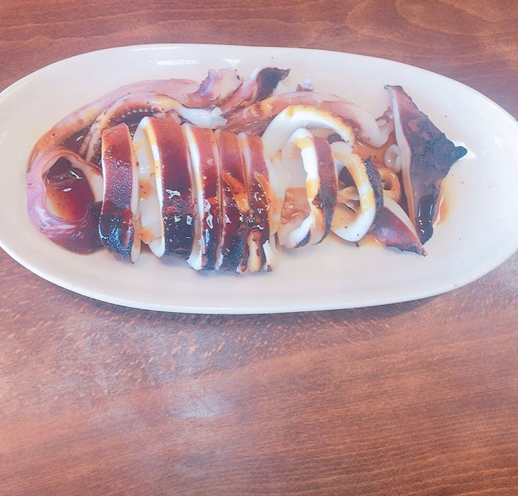
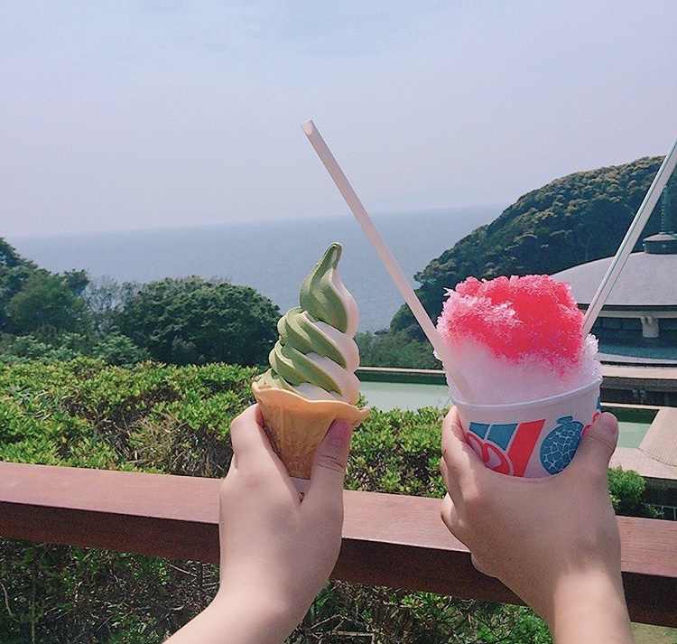
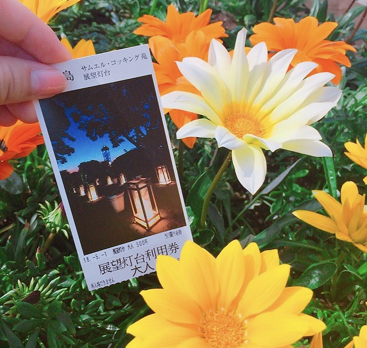
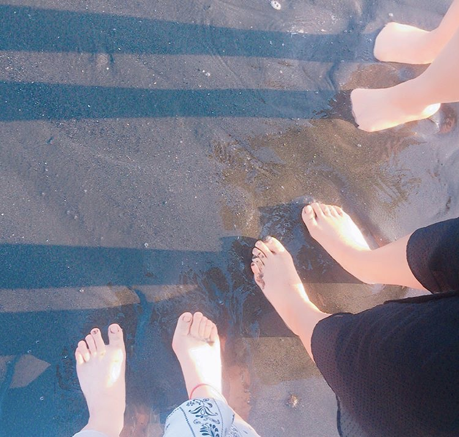

GW
横浜に友達と行った！
上京した友達に会うために行きました！そのためにバスで８時間乗っていました笑
そのせいか腰が痛かったです(T ^ T)
そのあと江ノ島に行って海や神社を周りました。たった１日でしたがとても楽しかったです！

江ノ島ではたくさんの捨てられ繁殖した猫がたくさんいました！
しかもみんな島の人が世話してるんですって！
そのおかげか毛並みも綺麗で人にも慣れてたので触っても動かず、とても可愛かったです！

イカ焼きやかき氷、ソフトクリームなど島の名物は絶品でした



最後は海に行ってとても楽しかったです笑
